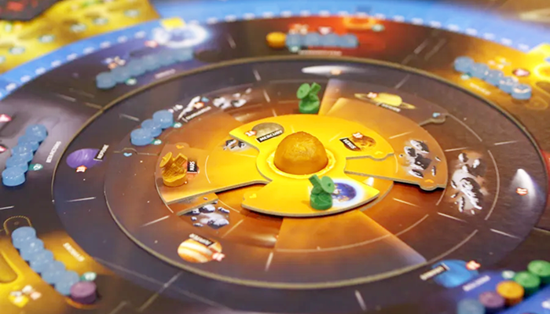
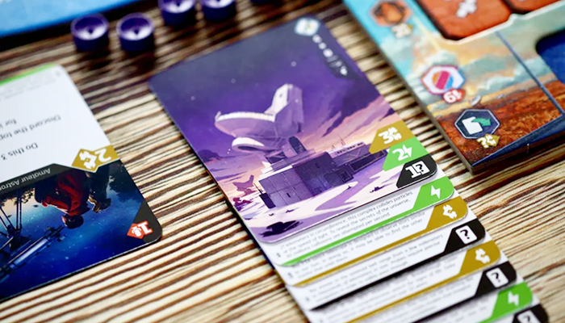
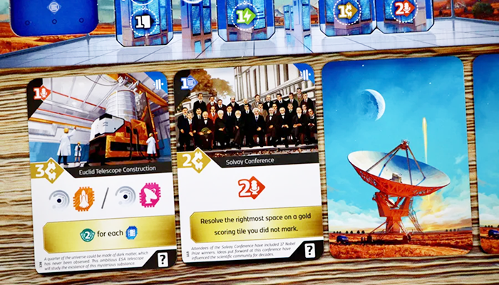

วิธีเล่น SETI

Summary
ธีมคือเราเป็นเจ้าของสถาบันวิทยาศาสตร์ที่จะแข่งกันค้นหาร่องรอยสิ่งมีชีวิตนอกโลก ผู้เล่นสามารถสำรวจได้จากการปล่อยยานสำรวจจากโลก หรือการวิเคราะห์ข้อมูลจากการส่งคลื่นสัญญาณไปยังดาวเคราะห์นอกระบบสุริยะ ซึ่งในระหว่างนั้นผู้เล่นสามารถอัปเกรดอุปกรณ์ต่างๆ เพื่อเพิ่มประสิทธิภาพในการสำรวจให้ดียิ่งขึ้น

Setup
บอร์ดกลาง
- สุ่มวาง Alien 2 เผ่าคว่ำไว้
- สุ่มวางระบบสุริยะทั้ง 4 sector หรือสุ่มจาก Link
- สุ่มเปิดการ์ด 3 ใบจากกองจั่ว
- ทรัพยากร พลังงาน, เงิน, เม็ด Data
- สุ่มวางไทล์แต้มสีทอง 4 อัน
- วางบอทไว้ที่แต้ม 20 และ 30 โดยดูจำนวนได้จากในบอร์ดกลาง
- ไทล์เทคโนโลยีสุ่มคว่ำไว้ แยกสี แยกประเภท แล้วเอา 2 แต้มไว้บนสุดของแต่ละกอง
- กองการ์ดจบรอบ แต่ละกองมีการ์ดตามจำนวนผู้เล่น + 1 ทำไว้ 4 กอง แล้วเอาไทล์หมุนระบบสุริยะวางไว้ที่กองแรก
บอร์ดผู้เล่น
- คนแรกได้ดวงจันทร์
- คนแรกวางที่ 1 แต้ม คนที่ 2 ที่ 2 แต้ม ตามลำดับ
- วางยานสำรวจ 1 ลำที่โลก
- ได้รับการ์ดเริ่มต้นรูปจานดาวเทียม แล้วได้รับของตามการ์ด (ทุกคนเหมือนกันหมด)
- ค่าประชาสัมพันธ์ 4
- เงิน 4
- พลังงาน 3
- จั่วการ์ด 5 ใบ
- แล้วเลือก 1 ใบสจากบนมืเป็น Income (สอดไว้ล่างการ์ดดาวเทียม)

Overview
เกมจะเล่นทั้งหมด 5 รอบ ในแต่ละคนจะทำ 1 Main action และ Free actions กี่ครั้งก็ได้ แต่เมื่อทุกคนเลือกผ่านหมดจะถือว่าจบ 1 รอบ โดยใครที่ผ่านเป็นคนแรกจะได้เลือกการ์ดจากกองการ์ดจบรอบก่อน และได้หมุนระบบสุริยะในทันทีเมื่อผ่าน จากนั้นคิด Income ที่ตัวเองทำได้แล้วรอคนอื่นๆ เล่นจนกว่าจะผ่านหมด
Card Structure
การ์ดจะแบ่งเป็น 4 ส่วนใหญ่ๆ
- Discard: มุมบนซ้าย ซึ่งเป็นหนึ่งใน Free action เมื่อทิ้งจะได้เอฟเฟคตามที่ระบุ
- Sector: มุมบนขวาใช้เมื่อทำ Main action > Scan
- Main action: อยู่ตรงกลาง โดยจ่ายตามที่ระบุ ซึ่งจะมีทั้งได้ทันที ภารกิจ (สีเทา) หรือแต้มโบนัสจบเกม (สีเหลือง)
- Income: มุมขวาล่าง จะนำไปไว้ใต้การ์ดเริ่มต้น (การ์ดจานดาวเทียม) จะได้ของทันทีถ้าเสียบการ์ด และได้อีกครั้งตอนรับ Income จบรอบ

Playing
ทำได้ 1 Main action และ Free actions กี่ครั้งก็ได้ โดย Free actions จะเล่นก่อนหรือหลัง Main actions ก็ได้ ไอคอนต่างๆ ดูได้ใน Player aid
Main Actions
1. Play card
เล่น Main action ของการ์ดนั้น โดยจ่ายค่าใช้จ่ายตามที่ระบุ ถ้าเป็นการ์ดที่ไม่ใช่ภารกิจหรือโบนัสแต้มจบเกม ให้ทิ้งการ์ดได้เลย
2. Launch
จ่ายเงิน 2 บาท เพื่อส่งยานสำรวจ โดยให้วางยานสำรวจที่โลก 1 ลำ แต่ถ้าอัปเกรดเทคโนโลยี จะเป็น 2 ลำได้
3. Orbit
จ่ายเงิน 1 บาทและ 1 พลังงาน เพื่อเอายานสำรวจเข้าสู่วงโคจรดาวเคราะห์ เงื่อนไขคือยานสำรวจของผู้เล่นต้องอยู่บนดาวนั้นก่อน จากนั้นได้รับรางวัลของดาวนั้นๆ
4. Land
จ่าย 3 พลังงาน เพื่อลงจอดที่ดาวหรือดวงจันทร์ (ถ้าอัปเกรดดวงจันทร์) หากก่อนหน้านี้ Orbit จะจ่ายแค่ 2 พลังงาน (ถ้าอัปเกรดจะจ่ายแค่ 1) เมื่อลงจอดจะได้ของตามดาวนั้น
วิธีหลักในการเอาแต้มสำรวจเหลือง
5. Scan
จ่ายเงิน 1 บาท และ 2 พลังงาน เพื่อสำรวจดาววงนอกสุดใน Sector เดียวกับโลก (ถ้าอัปเกรดจะได้ 3 Sector จากโลก และสำรวจจากดาวศุกร์ได้) จากนั้นเลือกการ์ดที่หงาย 1 ใน 3 ใบ เพื่อสำรวจดาววงนอกที่ตรงกับสีการ์ดที่เลือก (ถ้าอัปเกรดจะเลือกบนมือแทนได้)
เมื่อแสกนให้เอา Marker ไปวางแทน Data แล้วเก็บ Data มาไว้ในคลังของบอร์ดผู้เล่น ถ้่า Sector ไหนแสกนจนครบแล้วให้ดูว่า Marker ของผู้เล่นคนไหนมากสุด จะได้วางที่ช่อง Winner แล้วรีเซ็ท Sector นั้น หากมีลำดับสองที่เป็นของคนอื่นให้เหลือของคนนั้นไว้ และเมื่อครบอีกครั้งก็จะวางไว้ช่องรางวัลข้างๆ ซึ่งสามารถวางกี่ครั้งก็ได้
กรณีที่เหลือที่เดียวแล้วจะเต็ม สามารถวางเกินได้เพื่อนับจำนวน Marker แต่ตอนรีเซ็ทก็โละทิ้งเหมือนกัน
วิธีหลักในการเอาแต้มสำรวจชมพู
6. Analyze Data
จ่าย 1 พลังงาน โดยต้องมีเม็ด Data เต็มช่องในเส้นขาว (เม็ด Data เก็บได้สูงสุด 6 เม็ด) บางช่องจะมีรางวัล ถ้าวางก็จะได้ของตามนั้น เมื่อแสกนแล้วให้ทิ้ง Data ที่ใช้ยกเว้นในคลัง
กรณีที่จะอัปเกรดช่องที่ถูกวางแล้วสามารถทำได้ แต่จะไม่ได้รางวัลจากไทล์อัปเกรด (ต้องแสกนแล้ววางใหม่) และไทล์อัปเกรดจะมีช่องเส้นประ ซึ่งจะวางหรือไม่วางก็ได้ แต่ถ้าจะวางต้องวางช่องเส้นขาวก่อนเสมอ
วิธีหลักในการเอาแต้มสำรวจฟ้า
7. Research
จ่ายค่าประชาสัมพันธ์ 6 แล้วเลือกไทล์อัปเกรดอันไหนก็ได้ ถ้าเป็ยคนแรกที่หยิบจากกองนั้น จะได้โบรัสแต้ม 2 ไปด้วย จากนั้นหมุนระบบสุริยะ
8. Pass
เมื่อผ่านให้ทิ้งการ์ดบนมือให้เหลือ 4 ใบ จากนั้นเลือกการ์ดจากกองการ์ดจบรอบ 1 ใบ ถ้าเป็นคนแรกให้หมุนระบบสุริยะทันที จากนั้นสามารถคิด Income ของตัวเองได้เลย แล้วรอให้ทุกคนผ่านเพื่อเล่นรอบใหม่
Free Actions
สามารถเล่นกี่ครั้งและก่อนหรืิอหลัง Main actions ก็ได้ โดย Actions มีทั้งหมดดังนี้
- การวางเม็ด Data
- รับรางวัลภารกิจของการ์ดที่ทำสำเร็จ
- ทิ้งการ์ด แล้วทำความสามารถของไอคอนบนซ้ายของการ์ด
- เคลื่อนที่ยาน 1 ก้าว โดยใช้ 1 พลังงาน (ถ้าออกจากดาวเคราะห์น้อยต้องใช้ 2 ก้าว)
- ซื้อการ์ด โดยจ่ายค่าประชาสัมพันธ์ 3
- แลกเปลี่ยนค่าเงิน, พลังงาน, การ์ด อัตราส่วน 2:1
Milestones
ถ้าแต้มถึงช่องสีทองให้เอา Marker ของตัวเองไปวางไว้ที่ไทล์โบนัสแต้มจบเกมสีทอง ถ้าแต้มเกิน 100 แล้ววนกลับมาช่องทองอีกจะไม่ได้ทำนะ (ทั้งเกมทำได้แค่ 3 ครั้ง)
Endgame & Scoring
จบเมื่อรอบที่ 5 ทุกคนผ่านหมดจะจบเกมแล้วนับแต้ม
แต้มผู้เล่น + แต้มไทล์โบนัสทอง + แต้มจากเอเลี่ยนบางเผ่า
Aliens
มีทั้งหมด 5 เผ่า เมื่อการสำรวจเอเลี่ยนครบ 3 โทเคนจะเปิดไทล์เอเลี่ยน แล้วเพิ่มกองจั่วการ์ดของเอเลี่ยนนั้นๆ โดยเปิด 1 ใบไว้ด้านข้างกอง โดยโทเคนจะค้างไว้จนกว่าจะสำรวจสีนั้นๆ ได้อีกรอบถึงจะเข้าไปเลือกได้ว่าจะวางช่องไหนในไทล์เอเลี่ยน ผู้เล่นที่มาทีหลังจะวางไว้ที่ Overflow (ถ้าไม่มีทีว่าง) แต่ก็เอาไปวางข้างในได้ปกติ ถ้าทำแต้มสีได้
ไอคอนเอเลี่ยนคือจั่วการ์ดจากกองเอเลี่ยนเผ่านั้น ได้ทั้งที่คว่ำและหงาย และการ์ดเอเลี่ยนนำไปแลกเปลี่ยนได้เหมือนการ์ดใบหนึ่ง ยกเว้นเผ่า Exertians
Anomalies
เอเลี่ยนที่มาในรูปแบบวัตถุทรงกลมปริศนาและสามารถบิดเบือนกาลอวกาศได้ เมื่อเกิดการค้นพบได้จุดชนวนความคิดของมนุษย์ว่าในขณะที่เรากำลังเฝ้ามองอยู่ มีบางอย่างได้เฝ้ามองเรากลับหรือไม่ รับการ์ดตามจำนวนโทเคนที่วางไว้ และให้เอาสุ่มวาง Anomalies 3 อันไปไว้ที่โซน 4 ดังนี้
- sector เดียวกับโลก
- 3 sector นับจากโลกทวนเข็มนาฬิกา
- 3 sector นับจากโลกตามเข็มนาฬิกา
เมื่อมีการหมุนระบบสุริยะให้ดูว่าโลกตรงกับ Anomaly อันไหนและสีไหน ผู้เล่นที่มีแต้มสีของเอเลี่ยนเผ่านี้สูงสุดจะได้ Effect ของ Anomaly นั้น โดยจุดสูงสุดรวมถึงคนที่มาทีหลังด้วย (ตำแหน่ง 2 แต้ม)
หากมาทีหลังแล้วไม่มีที่วางให้วางบนสุด 2 แต้ม ตรงนี้จะวางกี่อันก็ได้และถือว่าเป็นบนสุด
Oumuamua
เอเลี่ยนที่ซากฟอสซิลยาวกว่า 400 เมตร การศึกษาเพิ่มเติมเกี่ยวกับซากดึกดำบรรพ์นี้อาจเปลี่ยนแปลงความเข้าใจเกี่ยวกับชีวิตในจักรวาลไปตลอดกาล รับการ์ดตามจำนวนโทเคนที่วางไว้ แล้ววางไทล์ Oumuamua ในโซน 3 จากนั้นใส่เม็ด Data และวางโทเคนฟอสซิลไว้ใกล้กับบอร์ดกลาง
- ไอคอนฟอสซิลหมายถึงได้รับ 1 โทเคนฟอสซิล
- การจะวางแต้มเอเลี่ยนได้ต้องจ่ายด้วยโทเคนฟอสซิล
- สามารถ Orbit และ Land ได้ เป็นอีกทางที่จะได้ฟอสซิล
Exertians
ค้นพบซากเทคโนโลยีขั้นสูงที่สกัดพลังงานจากแกนของดาวเคราะห์ จนนำไปสู่การล่มสลาย เปิดสิ่งย้ำเตือนการใช้เทคโนโลยีนี้อย่างระมัดระวัง ไม่เช่นนั้นอาจเกิดการต่อต้านจากสาธารณชนได้ ทุกคนได้รับการ์ด 3 ใบ และเพิ่มอีกตามจำนวนโทเคนที่วางไว้ และวาง Milestone ที่แทร็คแต้มอันแรก + 20 และ + 40 จากแต้มคนแรกที่นำ
- ใครที่ไปถึง Milestone สามารถเล่นหรือไม่เล่นการ์ดเอเลี่ยนก็ได้
- การ์ดจะเป็นภารกิจ
- มีแต้ม Danger เมื่อจบเกมใครเยอะสุดจะโดนหักแต้ม 10%
Mascamide
บนดวงจันทร์ของดาวเสาร์และพฤหัส ได้ค้นพบเอเลี่ยนที่กินแร่ Mascamide แร่ธาตุหายากบนเวงจันทร์ โดยลักษณะทางสังคมและพฤติกรรมเหมือนแมลงบนโลก การศึกษาจะเปิดเผยธรรมชาติที่แท้จริงของมัน รับการ์ดตามจำนวนโทเคนที่วางไว้ จากนั้นสับโทเคนแมลงไว้ที่ดาวเสาร์และพฤหัสอย่างละ 3 อัน
- เมื่อทำภารกิจให้เอาโทเคนมาดู (ยกเว้นอันที่จองไว้) แล้วเลือก 1 อัน โดยเอาโทเคนผู้เล่นวางทับไว้
- โทเคนจะติดกับยานที่เลือกไว้
- เมื่อเอายานกลับโลกจะได้ของรางวัลข้างหลัง แล้วเอาไปวางไว้ที่ไทล์เอเลี่ยน
- สามารถเคลมการ์ดได้ทีเดียวหลายไป ใบไหนก่อนก็ได้
Centaurian
เราได้ติดต่อกับอารยธรรมที่อยู่ห่างออกไป 4.5 ปีแสง อารยธรรมของพวกเขาเทียบได้กับเรา ทำให้การตอบแต่ละครั้งต้องรอถึง 9 ปี ในระหว่างนี้นักดาราศาสตร์และนักวิทยาศาสตร์กำลังทำงานอย่างหนักเพื่อถอดรหัสจากอารยธรรมของพวกเขา รับการ์ดตามจำนวนโทเคนที่วางไว้ และผู้ละคนได้รับ Milestone ของตัวเองแล้วนำไปวางไว้ที่ + 15 จากแต้มปัจจุบัน
- เมื่อทำแต้มถึง Milestone จะสามารถใช้ Milestone นี้เคลมรางวัลบนไทล์เอเลี่ยนได้
- บางช่องของไทล์เอเลี่ยนต้องจ่านเม็ด Data